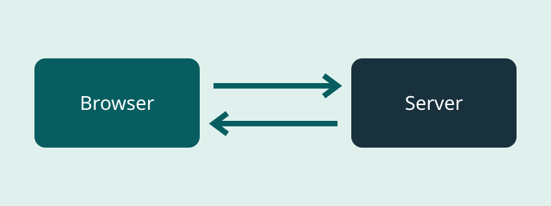

图片、响应式资源与原生媒体
本页图片和一秒提示音均为本地资源。图片以替代文本传达信息，音频提供文字说明；不自动播放。

原生音频
文字替代：一秒钟持续的纯音，没有语音内容。
选择本地视频
本示例不内置视频。选中文件后，使用原生控制栏播放；编码是否支持取决于浏览器。
正式视频需要对应内容的字幕及必要的文字/音频描述。本地文件预览不会自动产生字幕，不能代替完整可访问媒体交付。
本页图片和一秒提示音均为本地资源。图片以替代文本传达信息，音频提供文字说明；不自动播放。

文字替代：一秒钟持续的纯音，没有语音内容。
本示例不内置视频。选中文件后，使用原生控制栏播放；编码是否支持取决于浏览器。
正式视频需要对应内容的字幕及必要的文字/音频描述。本地文件预览不会自动产生字幕，不能代替完整可访问媒体交付。